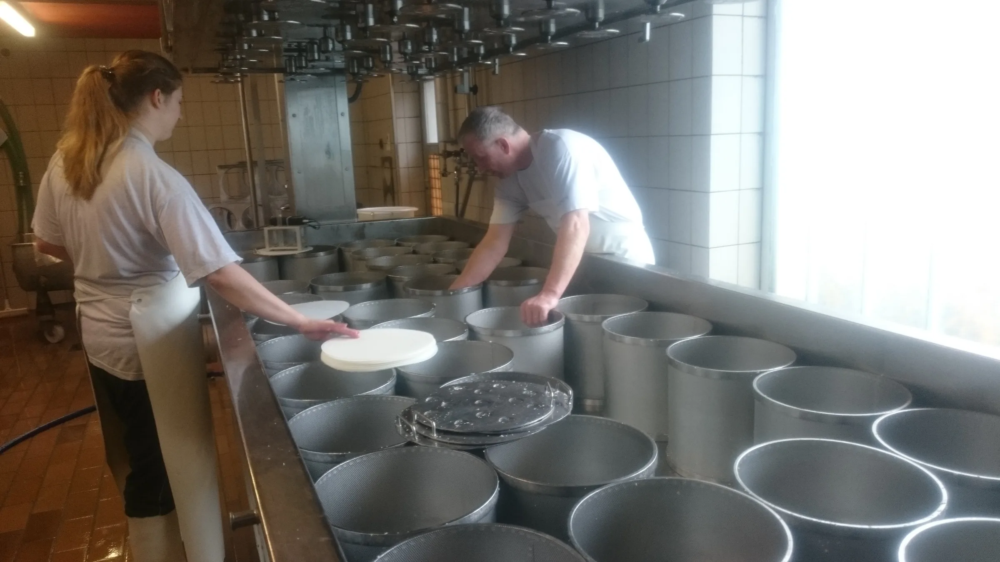
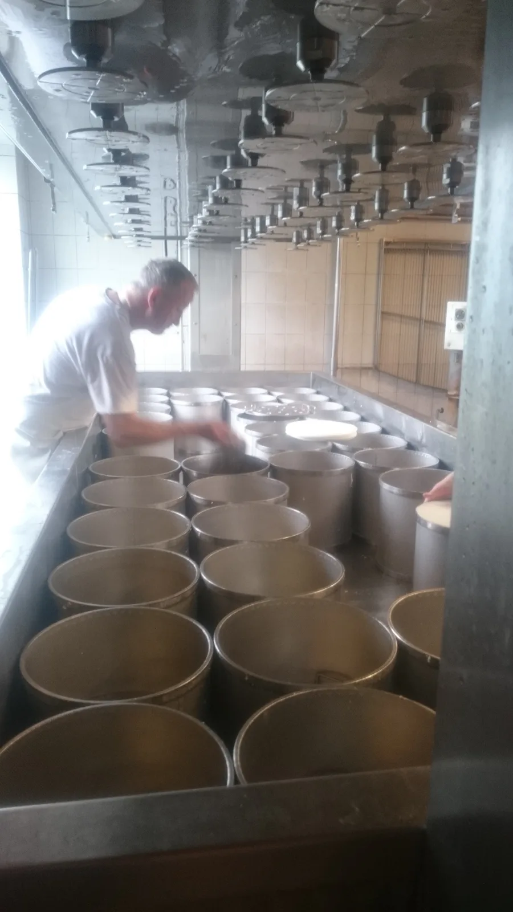
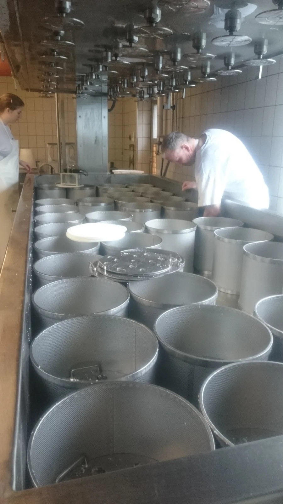
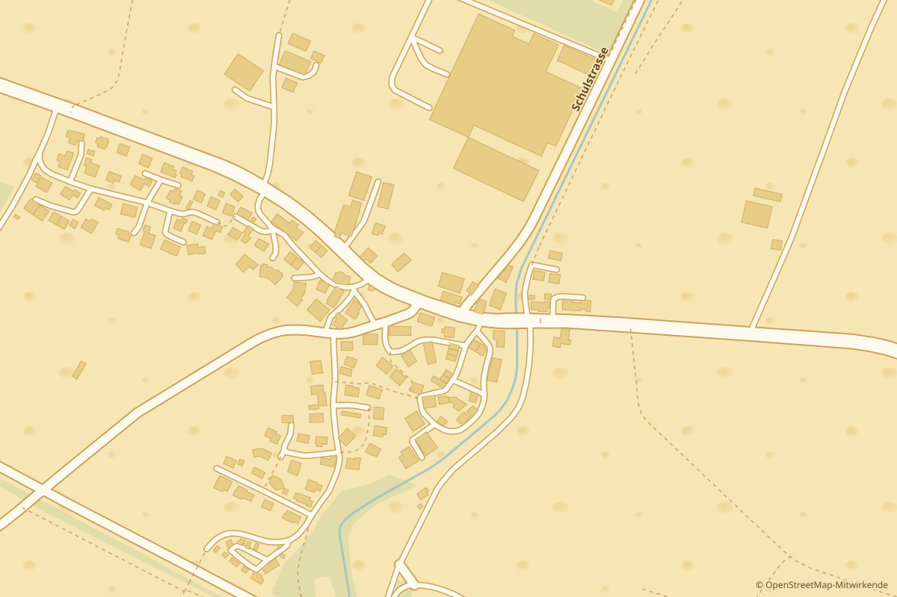

Ein kleines, hübsches Geschäft wie zu Grossmutterszeiten. Feiner Käse und sehr freundliche Bedienung. Einfach toll!
Anita S.★★★★★

Seit 1994 käst Norbert Eberle-Kälin hier Appenzeller – aus der Milch von Bauern aus der Umgebung. Im kleinen Laden gibt es Hauskäse und viele weitere Sorten.
Ziehen Sie den Regler – vom Appenzeller aus dem Kessi bis zur Fondue-Mischung für den Tisch.
Von der Weltmeisterschaft in Madison bis zu den World Cheese Awards in Bern – der Appenzeller aus Obersteinach überzeugt die Jury.
Appenzeller® Mild-Würzig
Appenzeller® Käse, Hopfgarten
Appenzeller® Käse vollfett
3. Platz von 22 – Kategorie Appenzeller

Norbert Eberle-Kälin führt die Käserei Obersteinach als Familienbetrieb. Die Bauern aus der Umgebung liefern jeden Tag ihre Milch – gekäst wird an sieben Tagen die Woche.
Norbert Eberle beginnt, in Obersteinach Appenzeller zu käsen.
Bronze an der Käse-Weltmeisterschaft in Madison (USA): 3. Platz von 22 in der Kategorie Appenzeller.
Silber an der Käsiade in Hopfgarten (Tirol).
Bronze an der Käsiade und an den World Cheese Awards in Bern.
Gepflegt wird der Käse mit Kräutersulz. Das Rezept? Bleibt ein Geheimnis.

Ein kleines, hübsches Geschäft wie zu Grossmutterszeiten. Feiner Käse und sehr freundliche Bedienung. Einfach toll!
Kleine Chäsi mit wunderbarem Hauskäse und vielen anderen Sorten. Die Fonduemischung und Raclettescheiben sind auch zu empfehlen.
Toller kleiner Käseladen. Super nette Bedienung und eine Top-Qualität, was den Käse betrifft. Ich komme auf jeden Fall wieder.
Super Angebot, Preise absolut top und nette Bedienung. Leider wohnen wir 800 km weg – aber wenn wir in der Schweiz sind, fahren wir immer hin.
Sehr feiner Käse und eine sehr freundliche Bedienung. Ich komme immer wieder gerne in diesen Laden.
Super, allerbester Käse. Frau Eberle – sehr freundliche Bedienung. Weiter so!
Super Hauskäse, sehr freundlich. Jederzeit wieder. Vielen Dank!

Der kleine Käseladen hat Montag bis Samstag von 7 bis 11 Uhr offen. Für grössere Bestellungen am besten vorher anrufen.